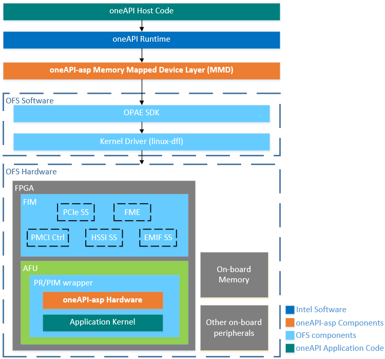
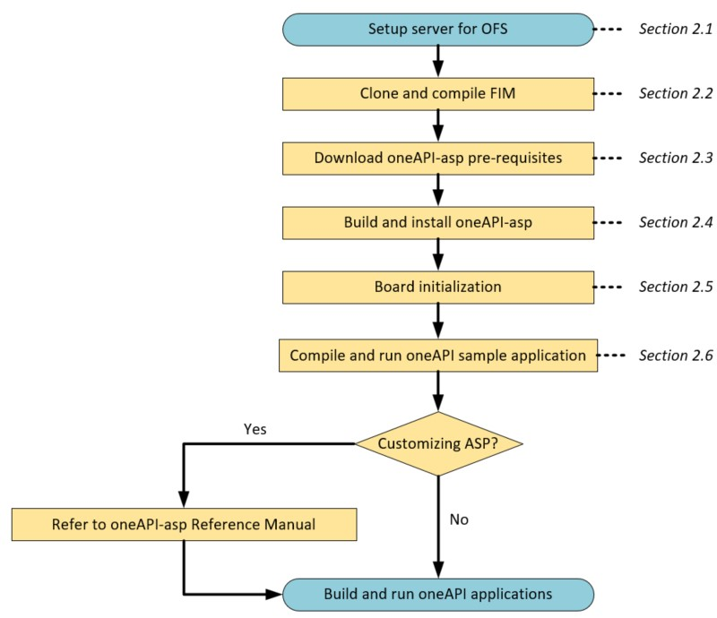

oneAPI Accelerator Support Package (ASP): Getting Started User Guide¶
1.0 Introduction¶
1.1 About This Document¶
This document serves as a quick start guide for setting up Intel® oneAPI Base Toolkit (Base Kit) on Open FPGA Stack (OFS) using oneapi-asp repository. Please see Table 1-1 for OFS reference platforms targeted in this guide.
Table 1-1 HLD Tools
| Target Device for the oneAPI ASP | Target Platform for the oneAPI ASP |
|---|---|
| Intel® Agilex® 7 FPGA | Intel® FPGA SmartNIC N6001-PL |
| Intel® Stratix 10® FPGA | Intel® FPGA PAC D5005 |
Attention: Intel is discontinuing the Intel FPGA SDK for OpenCL software product. Refer to the Product Discontinuation Notice PDN2219. Alternatively, Intel recommends using the Intel® oneAPI Base Toolkit (Base Kit), which provides core tools and libraries for developing high-performance data-centric applications across diverse architectures. It features an industry-leading C++ compiler that implements SYCL*, an evolution of C++ for heterogeneous computing. For more information, refer to the Intel® oneAPI Base Toolkit (Base Kit) web page. To migrate your OpenCL FPGA designs to SYCL, review Migrating OpenCL FPGA Designs to SYCL* guide that demonstrates important differences between OpenCL and SYCL for FPGA and provides steps to migrate your OpenCL designs.
After reviewing the document you will be able to:
- Setup your host machine to develop HLD AFUs
- Compile and run sample HLD applications on OFS
1.2 Terminology¶
This table defines some of the common terms used when discussing OFS.
Table 1-2: Terminology
| Term | Abbreviation | Description |
|---|---|---|
| Open FPGA Stack | OFS | A modular collection of hardware platform components, open source software, and broad ecosystem support that provides a standard and scalable model for AFU and software developers to optimize and reuse their designs. |
| Accelerator Functional Unit | AFU | Hardware Accelerator implemented in FPGA logic which offloads a computational operation for an application from the CPU to improve performance. Note: An AFU region is the part of the design where an AFU may reside. This AFU may or may not be a partial reconfiguration region. |
| FPGA Interface Manager | FIM | Provides platform management, functionality, clocks, resets and standard interfaces to host and AFUs. The FIM resides in the static region of the FPGA and contains the FPGA Management Engine (FME) and I/O ring. |
| High Level Design | HLD | For the purpose of this guide, this term refers to designing with Intel® oneAPI Base Toolkit (Base Kit). |
| oneAPI Accelerator Support Package | oneAPI ASP OR oneapi-asp | A collection of hardware and software components that enable oneAPI kernels to communicate with oneAPI runtime as well as with OFS components. The hardware components of the oneAPI ASP along with the kernels lie in the AFU region. |
| Open Programmable Acceleration Engine Software Development Kit | OPAE SDK | A collection of libraries and tools to facilitate the development of software applications and accelerators using OPAE. |
| Platform Interface Manager | PIM | An interface manager that comprises two components: a configurable platform specific interface for board developers and a collection of shims that AFU developers can use to handle clock crossing, response sorting, buffering and different protocols. |
| Device Feature List | DFL | A concept inherited from OFS. The DFL drivers provide support for FPGA devices that are designed to support the Device Feature List. The DFL, which is implemented in RTL, consists of a self-describing data structure in PCI BAR space that allows the DFL driver to automatically load the drivers required for a given FPGA configuration. |
| Best Known Configuration | BKC | The exact hardware configuration Intel has optimized and validated the solution against. |
| SYCL | - | SYCL (pronounced "sickle") is a royalty-free, cross-platform abstraction layer that enables code for heterogeneous and offload processors to be written using modern ISO C++ (at least C++ 17). It provides several features that make it well-suited for programming heterogeneous systems, allowing the same code to be used for CPUs, GPUs, FPGAs or any other hardware accelerator. SYCL was developed by the Khronos Group, a non-profit organization that develops open standards (including OpenCL™) for graphics, compute, vision, and multimedia. SYCL is being used by a growing number of developers in a variety of industries, including automotive, aerospace, and consumer electronics. |
| Data Parallel C++ | DPC++ | DPC++ is Intel’s implementation of the SYCL standard. It supports additional attributes and language extensions which ensure DCP++ (SYCL) is efficiently implanted on Intel hardware. |
| Installable Client Driver | ICD | Intel® FPGA Runtime for OpenCL™ Software Technology supports the OpenCL ICD extension from the Khronos Group™. The OpenCL ICD extension allows you to have multiple OpenCL implementations on your system. With the OpenCL ICD Loader Library, you may choose from a list of installed platforms and execute OpenCL API calls that are specific to your OpenCL implementation of choice. |
| FPGA Client Driver | FCD | Intel® FPGA Runtime for OpenCL™ Software Technology supports FPGA Client Driver(FCD) extension. FCD allows the runtime to automatically find and load the oneAPI ASP libraries at host run time |
1.3 Introduction to High Level Design on OFS¶
Intel currently provides Intel® oneAPI Base Toolkit (Base Kit) for FPGA application development using high level languages like Data Parallel C++(DPC++).
Figure 1-1 shows how OFS components can be used with Intel HLD tool.
Figure 1-1 HLD Tool on OFS Platforms 
{kind=link}
For high level description and setup details for OFS components shown in figure above, please refer to the Getting Started guide for your target device.
For a more detailed diagram and more information about the FPGA Interface Manager(FIM) shown in figure above, please refer to the FIM developer guides for your target device.
- Intel® FPGA Interface Manager Developer Guide: Open FPGA Stack for Intel® Agilex® PCIe Attach FPGAs.
The oneAPI ASP is required for compiling and running HLD application kernel on OFS platforms using Intel oneAPI. It is a collection of hardware and software components that enable oneAPI kernels to communicate with oneAPI runtime as well as with other OFS components. The hardware components of the oneAPI ASP along with the kernel lie in the AFU region shown in the figure above. For more details about the components of the oneAPI ASP, please refer to oneAPI Accelerator Support Package(ASP) Reference Manual: Open FPGA Stack.
Figure 1-2 shows the setup steps to use oneAPI base toolkit on OFS platforms.
Figure 1-2 Setup Steps for oneAPI base toolkit on OFS Platforms 
{kind=link}
The next section covers the setup steps in detail.
Note: Administrative privileges are needed for multiple setup steps, ensure you have administrative/sudo privileges before proceeding.
2.0 Setup Flow for Using HLD Tool on OFS¶
2.1 Setup Server for OFS¶
As a first step, the server or host machine being used for developing HLD application needs to be setup for OFS. This involves setting up the FPGA card as well as installing OFS software stack including OPAE SDK and OFS DFL kernel driver.
Please follow steps in Getting started guides for your target devices to setup Linux DFL kernel driver and install OPAE SDK.
- OFS Getting Started User Guide: Open FPGA Stack for Intel® Agilex® PCIe Attach FPGAs
- OFS Getting Started User Guide: For Intel® Stratix 10® PCIe Attach FPGAs.
2.2 Clone and Compile FIM¶
As shown in Figure 1-1, OFS components in the FPGA include the FIM and Accelerator Functional Unit(AFU). The oneAPI ASP is in the Partial Reconfiguration(PR) region of the AFU and relies on the compiled database of the static region(FIM) to interface with the host and board peripherals(e.g. on-board memory).
Once the server is setup with OPAE SDK and DFL kernel driver, the next step is to clone and compile the static region of the design, i.e. FIM. You can use the default configuration of the FIM for both target platforms. Additionaly for Intel® FPGA SmartNIC N6001-PL for ofs_n6001 and ofs_n6001_usm board variants you have the option to create a minimal FIM which removes additional VFs, HSSI and host exercisers in the design. Please follow steps in the Intel® FPGA Interface Manager Developer Guides for your target device to compile FIM supporting PR release.
- Intel® FPGA Interface Manager Developer Guide: Open FPGA Stack for Intel® Agilex® PCIe Attach FPGAs.
For more details on minimal FIM for Intel® Agilex® 7 FPGA for ofs_n6001 and ofs_n6001_usm board variants and how to create it, refer to Intel® FPGA Interface Manager Developer Guide: OFS for Intel® Agilex® PCIe Attach FPGAs.
A pr_build_template directory will be generated in the work directory specified as part of the FIM compile command (using OFS/ofs-common/scripts/common/syn/build_top.sh script with the '-p' option enable to create an out-of-tree PR release). The pr_build_template directory is required for successful setup of the oneAPI ASP.
Once the FIM compile is complete, please program FIM using fpgasupdate and Remote System Update(rsu) command. Use of these commands has been demonstrated in section named Program the Intel® FPGA SmartNIC N6001-PL with the hello_fim in Intel® FPGA Interface Manager Developer Guide: Open FPGA Stack for Intel® Agilex® PCIe Attach FPGAs refer to Test the hello_fim on a D5005 section in FPGA Interface Manager Developer Guide: Open FPGA Stack for Intel® Stratix 10® PCIe Attach FPGAs for Intel® Stratix 10® FPGA.
2.3 Prerequisites¶
In addition to server setup and FIM compilation, a few linux packages are needed to setup the oneAPI ASP and develop HLD applications.
1) Install the following packages:
sudo dnf install numactl-devel ncurses-compat-libs
2) Ensure that IOMMU is turned on as explained in section Building and Installing the OFS DFL Kernel Drivers from Source in Getting started guides for your target devices:
You can verify this setting using cat /proc/cmdline command. The output must have intel_iommu=on pcie=realloc hugepagesz=2M hugepages=200.
$ cat /proc/cmdline
BOOT_IMAGE=(hd1,gpt2)/vmlinuz-6.1.41-dfl root=/dev/mapper/rhel-root ro crashkernel=auto resume=/dev/mapper/rhel-swap rd.lvm.lv=rhel/root rd.lvm.lv=rhel/swap rhgb quiet intel_iommu=on pcie=realloc hugepagesz=2M hugepages=200
3) Install HLD development software. Please see Table 2-1 below for download link. Install the latest version. Use sudo privileges to do the installation.
Table 2-1 Intel HLD Tool and Download Information
| HLD Tool | Target Platform for the oneAPI ASP | Tool Download Information |
|---|---|---|
| Intel® oneAPI Base Toolkit (Base Kit) |
|
Download here |
Tool installation guide for your reference:
4) Ensure you have all the Quartus patches installed, refer to Table 2-3 for required Quartus version.
Note: For Intel® Agilex® 7 FPGA ensure Quartus patch 0.13, 0.21 and 0.02iofs are installed. You can find them in a tar file under assets in the following link patch-agx7-ofs-2023-3.tar.gz. For Intel® Stratix 10® FPGA ensure Quartus patch 0.23 and 0.01iofs are installed. You can find them in a tar file under assets in the following link patch-s10-ofs-2023-3.tar.gz.For quartus patches installation to work properly, you must have Git Large File Storage (LFS) installed when cloning the ofs-fim repository.
Use following command to check Quartus version and installed patches.
quartus_sh -v
5) After completing the tool installation, set the following environment variables required to execute build scripts successfully:
# Adding Quartus to PATH
export PATH=$PATH:path-to-quartus-installation-dir/bin
export QUARTUS_ROOTDIR=path-to-quartus-installation-dir/quartus
export QUARTUS_ROOTDIR_OVERRIDE=$QUARTUS_ROOTDIR
# Other OFS environment variables
export OFS_ROOTDIR=path-to-directory-containing-cloned-ofs-fim-repo/#ofs-agx7-pcie-attach for Intel® Agilex® 7 FPGA or ofs-d5005 for Intel® Stratix 10® FPGA
export WORKDIR=$OFS_ROOTDIR
export QUARTUS_HOME=$QUARTUS_ROOTDIR
export QUARTUS_INSTALL_DIR=$QUARTUS_ROOTDIR
export IMPORT_IP_ROOTDIR=$QUARTUS_ROOTDIR/../ip
export OPAE_SDK_REPO_BRANCH=release/branch-tag # Refer to Table 2-3, for OPAE SDK branch tag
export OFS_PLATFORM_AFU_BBB=path-to-cloned-ofs-platform-afu-bbb-repo
export OPAE_PLATFORM_ROOT=path-to-ofs-fim-pr_build_template-directory # (see section 2.2 for more details)
export OFS_ASP_ROOT=path-to-directory-containing-oneapi-asp/oneapi-asp/platform-name #platform-name is n6001 for Intel® FPGA SmartNIC N6001-PL and d5005 for Intel® FPGA PAC D5005
export LIBOPAE_C_ROOT=/usr # (OPAE libraries are installed in /usr/lib64 by default if you followed the OPAE SDK steps covered in section 2.1 as is and installed OPAE rpm packages. If you have a different OPAE installation path, please point LIBOPAE_C_ROOT to your OPAE installation location that you specified using -DCMAKE_INSTALL_PREFIX=installation-path in cmake command for building OPAE)
Note: To re-use this environment setting, you can copy the above export statements to a shell script, update the paths to match your tool installations and source this script each time a new shell is started.
6) Source initialization script for oneAPI, path is shown in table below.
Table 2-2 Initialization Script for HLD tool
| Tool | Command to source initialization script |
|---|---|
| Intel® oneAPI Base Toolkit (Base Kit) | source path-to-intel-oneapi-toolkit-installation-directory/setvars.sh |
Once the environment variables are set, you can check the tool version using the following commands:
# Printing all (Quartus, OpenCL SDK, GCC) versions for user info
quartus_sh -v
icpx --version (for Intel® oneAPI Base Toolkit (Base Kit))
gcc --version
Table 2-3 and 2-4 summarize the tool version/Best Known Configurations(BKC).
Table 2-3 Best Known Configuration(BKC) for Intel® Agilex® 7 FPGA OFS
| Component/Tool | Version |
|---|---|
| FPGA Platform | Intel® FPGA SmartNIC N6001-PL |
| Operating System | RHEL 8.6 , Kernel : 6.1.41-dfl |
| linux-dfl (DFL Kernel Driver) | Tag: ofs-2023.3-6.1-2 |
| opae-sdk | Branch: release/2.10.0, Tag: 2.10.0-1 |
| ofs-fim | Tag: ofs-2023.3-1 |
| oneapi-asp | Tag: ofs-2023.3-1 > Note: Cloning and build of this repo is discussed in the section 2.4 |
| Quartus Prime Pro Edition | Version 23.3 Pro Edition with patches (0.13, 0.21 and 0.02iofs) under assets on this link [patch-agx7-ofs-2023-3.tar.gz]](https://github.com/OFS/ofs-agx7-pcie-attach/releases/tag/ofs-2023.3-1) |
| Intel® oneAPI Base Toolkit (Base Kit) | Latest version |
| GCC | 7.4.0 |
| cmake | 3.15 |
Table 2-4 Best Known Configuration(BKC) for Intel® Stratix 10® FPGA
| Component/Tool | Version |
|---|---|
| FPGA Platform | Intel® FPGA PAC D5005 |
| Operating System | RHEL 8.6 , Kernel : 6.1.41-dfl |
| linux-dfl (DFL Kernel Driver) | Tag: ofs-2023.3-6.1-1 |
| opae-sdk | Branch: release/2.10.0, Tag: 2.10.0-1 |
| ofs-fim | Tag: ofs-2023.3-1 |
| oneapi-asp | Tag: ofs-2023.3-1 > Note: Cloning and build of this repo is discussed in the section 2.4 |
| Quartus Prime Pro Edition | Version 23.3 Pro Edition with patches( patch 0.23 and 0.01iofs) under assets on this link patch-s10-ofs-2023-3.tar.gz |
| Intel® oneAPI Base Toolkit (Base Kit) | Latest version |
| GCC | 7.4.0 |
| cmake | 3.15 |
2.4 Build and Install oneapi-asp¶
Once all pre-requisites are installed and the environment variables are set, next step is to clone and build oneapi-asp.
1) Clone oneapi-asp repository and checkout tag matching the BKC for your target platform (see Tables 2-3 and 2-4 for the BKCs).
Note: You will need a personal access token (use the classic mode) to be used as the password to clone successfully. Please see more information about token authentication requirements for Git operations here.
git clone https://github.com/OFS/oneapi-asp.git
cd oneapi-asp
git checkout tags/ofs-2023.3-1
Ensure the correct tag has ben checked out:
git describe --tags
- Output:
ofs-2023.3-1
2) Ensure that OPAE_PLATFORM_ROOT and LIBOPAE_C_ROOT have been set as described in section 2.3. Generate the oneAPI ASP hardware and software using provided build-bsp.sh script. This script clones required repositories and builds the oneAPI ASP libraries required by HLD host application to run successfully.
cd path-to-directory-containing-cloned-oneapi-asp-repo/oneapi-asp/platform-name
./scripts/build-bsp.sh
The generated directory structure is shown below. For more details refer to the oneAPI Accelerator Support Package(ASP) Reference Manual: Open FPGA Stack.
oneapi-asp/platform-name |--ase/ | |--base/ | |--hack_ip_files/ | |--compile-kernel.sh | |--run-ase.sh | |--setup.sh | |--simulate-aocx.sh |--bringup/source/simple-add-buffers/ | |--simple-add-buffers.cpp |--hardware/ | |--ofs_platform-name/ | |--ofs_platform-name_iopipes/ | |--ofs_platform-name_usm/ | |--ofs_platform-name_usm_iopipes/ |--linux64/libexec/ | |--flash | |--initialize | |--install | |--setup_permissions.sh | |--uninstall |--scripts/ | |--README.txt | |--build-bsp-sw.sh | |--build-bsp.sh | |--build-default-binaries.sh | |--build-mmd.sh | |--build-opae.sh | |--create-tarball.sh | |--dedup-hardware.sh | |--setup-bsp.py |--board_env.xml |--README.md
3) Once the oneAPI ASP is generated, add the following to LD_LIBRARY_PATH. You can add it to your script for setting environment variables (if you created one as noted in step 5 in section 2.3)
export LD_LIBRARY_PATH=$LD_LIBRARY_PATH:path-to-oneapi-asp/platform-name/linux64/lib
4) Check if FPGA Client Driver(FCD) exists for any other version of oneAPI ASP or for any other board. You can check with aocl list-devices command. It is recommended to run aocl list-devices as root user (login with sudo su) to see all installed ASPs on the host.
A sample output when a oneAPI ASP FCD is installed is shown below:
--------------------------------------------------------------------
Device Name:
acl0
BSP Install Location:
/home/ofsuser/oneapi-asp/platform-name
Vendor: Intel Corp
Physical Dev Name Status Information
ofs_ee00000 Uninitialized PR slot function not configured
Need to follow instructions to bind vfio-pci driver to PR slot function
BSP DIAGNOSTIC_PASSED
--------------------------------------------------------------------
If a oneAPI ASP/BSP is installed, uninstall using aocl uninstall path-to-oneapi-asp-install-location, where path-to-oneapi-asp-install-location is provided under BSP Install Location: in the output of aocl list-devices. If you are prompted with a question to unset the FCD, type Y. If you are prompted with a question to remove OpenCL BSP configuration settings, type Y.
Sample output for aocl uninstall command:
$ aocl uninstall /home/ofsuser/oneapi-asp/platform-name
aocl uninstall: Removing the FPGA Client Driver (FCD) from the system
[sudo] password for ofsuser:
aocl uninstall: Removing the board package /home/ofsuser/oneapi-asp/platform-name from the list of installed packages. This process may require admin privilege
aocl uninstall: Running uninstall from /home/ofsuser/oneapi-asp/platform-name/linux64/libexec
Do you want to remove oneAPI-ASP configuration settings [Y/n] Y
Deleting OPAE config files
Removing configuration files
OFS oneAPI-ASP uninstall complete
5) Install FPGA Client Driver(FCD) file for the oneAPI ASP using aocl install path-to-oneapi-asp/platform-name command as shown below. The host program uses FCD to find and link to the platform Memory Mapped Device (MMD) library. For more information about MMD library, refer to oneAPI Accelerator Support Package(ASP) Reference Manual: Open FPGA Stack.
aocl install path-to-directory-containing-oneapi-asp/oneapi-asp/platform-name
Notes:
1. TypeYwhen prompted to setup FCD at/opt/Intel/OpenCLFPGA/oneAPI/Boards(default location for Intel oneAPI).
Sample output aocl install command in Intel® oneAPI Base Toolkit (Base Kit) environment is shown below.
aocl install: Setting up the FPGA Client Driver (FCD) to the system. This process may require admin privilege
Install the FCD file to /opt/Intel/OpenCLFPGA/oneAPI/Boards
[sudo] password for ofsuser:
aocl install: Adding the board package path-to-oneapi-asp/platform-name to the list of installed packages
Installing the board package driver to the system.
aocl install: Running install from path-to-oneapi-asp/platform-name/linux64/libexec
Configuring locked memory setting
Configuring udev rules for DFL FPGA device permission
Configuring system with 1024 2M hugepages
Setting access permisions of /dev/uio to 666
Finished setup_permissions.sh script. All configuration settings are persistent.
Intel OFS oneAPI ASP install complete.
Run 'aocl diagnose' to list devices or 'aocl initialize <dev_name> <board_variant> to load default image
2.5 Board Initialization¶
OFS software stack expects boards to be initialized with a bitstream for the board variant intended to be used for development. An oneAPI sample application, named simple-add-buffers, has been provided in the oneapi-asp repository for generating initialization bitstreams for included board variants. The sample is located in oneapi-asp/platform-name/bringup/source.
oneapi-asp has four board variants for Intel® Agilex® 7 FPGA and two board variants for Intel® Stratix 10® FPGA (oneapi-asp/platform-name/hardware has the hardware design files for these). For more details on the architecture of the board variants, please refer to the oneAPI Accelerator Support Package(ASP) Reference Manual: Open FPGA Stack.
Table 2-5 oneAPI Sample Applications
| Board Variants | Sample Application |
|---|---|
|
simple-add-buffers |
Note: platform-name is n6001 for Intel® Agilex® 7 FPGA OFS and d5005 for Intel® Stratix 10® FPGA OFS
All samples are located in oneapi-asp/platform-name/bringup/source.
2.5.1 Compile Initialization Bitstreams¶
A script is provided in repo to compile simple-add-buffers oneAPI sample application. The script is oneapi-asp/platform-name/scripts/build-default-binaries.sh.
Script usage is as follows:
./build-default-binaries.sh -b name-of-board-variant
Note:
name-of-board-variantcan be ofs_platform-name, ofs_platform-name_usm, ofs_n6001_iopipes or ofs_n6001_usm_iopipes whereplatform-nameisn6001for Intel® Agilex® 7 FPGA OFS andd5005for Intel® Stratix 10® FPGA OFS. Refer to Table 2-5 for board variants available for each target platform. Compilation will take a few hours to complete.
The output directory of the sample application is written to oneapi-asp/platform-name/build/bringup. The generated bitstreams are also copied to oneapi-asp/platform-name/bringup/binaries/. These are used in the initialization of the platform.
Once the bitstreams are generated, create a VF and initialize the board as explained in following section. Ensure that the FIM has been programmed on the board as explained in section 2.2 Clone and Compile FIM
2.5.2 Create VF¶
The oneAPI ASP is located in the PR region of the FIM and is accessed through PF/VF Mux. Refer to the FIM Reference Manual for your target platforms for more details about PF/VF mapping.
- Reference FIM for Intel® Agilex® 7 FPGA OFS: VF0 is mapped to PR region and you can create 1 VF when using this FIM. Base_x16 FIM has 5 PF's and minimal FIM just 1 PF. See Technical Reference Manual: Open FPGA Stack for Intel® Agilex® PCIe Attach FPGAs for diagram showing PF/VF mapping.
- Reference FIM for Intel® Stratix 10® FPGA OFS: VF1 is mapped to PR region and you must create 2 VFs when using this FIM. This FIM has 1 PF. See FIM Technical Reference Manual: Open FPGA Stack for Intel® Stratix 10® PCIe Attach FPGAs for diagram showing PF/VF mapping.
- Create a VF using PCIe ID obtained from the output of
fpgainfo fme(PCIe s\:b\:d.f output)
sudo pci_device s:b:d.f vf num_vf #num_vf is 1 for Intel® Agilex® 7 FPGA and 2 for Intel® Stratix 10® FPGA
- Check that the VF is created using
sudo opae.io lscommand and note the PCIe ID for the VF(s) (the function number in s\:b\:d.f will be different for the VF). Sample output for Intel® Agilex® 7 FPGA minimal FIM is shown below. Output for base_x16 FIM should display 5 PF's and the PCIe ID for VF0 will be s:b:d.5.
$ sudo opae.io ls
[0000:b1:00.0] (0x8086, 0xbcce) Intel Acceleration Development Platform N6001 (Driver: dfl-pci)
[0000:b1:00.1] (0x8086, 0xbccf) Intel Acceleration Development Platform N6001 (Driver: None)
Sample output for Intel® Stratix 10® FPGA is shown below.
$ sudo opae.io ls
[0000:d8:00.0] (0x8086, 0xbcce) Intel FPGA Programmable Acceleration Card D5005 (Driver: dfl-pci)
[0000:d8:00.1] (0x8086, 0xbccf) Intel FPGA Programmable Acceleration Card D5005 (Driver: dfl-pci)
[0000:d8:00.2] (0x8086, 0xbccf) Intel FPGA Programmable Acceleration Card D5005 (Driver: dfl-pci)
Note:
sudo opae.io lswill list the accelerators, respective PCIe ID as well as the driver it is currently bound to.
- Bind the created VF(s) to vfio-pci driver, use the PCIe ID for the VF(s) for this step. Verify you are using the PCIe ID of the VFs you have created. For example:
- From sample output for Agilex OFS target platform having minimal FIM programmed shown above,
s:b:d.vfwill be0000:b1:00.1in command below. For base_x16 FIM should be s:b:d.5.
sudo opae.io init -d s:b:d.vf $USER
- Sample output for Intel® Agilex® 7 FPGA OFS target platform minimal FIM. Output for base_x16 FIM should be similar.
$ sudo opae.io init -d 0000:b1:00.1 $USER
Unbinding (0x8086,0xbccf) at 0000:b1:00.1 from dfl-pci
Binding (0x8086,0xbccf) at 0000:b1:00.1 to vfio-pci
iommu group for (0x8086,0xbccf) at 0000:b1:00.1 is 319
Assigning /dev/vfio/319 to ofsuser
Changing permissions for /dev/vfio/319 to rw-rw----
$ sudo opae.io ls
[0000:b1:00.0] (0x8086, 0xbcce) Intel Acceleration Development Platform N6001 (Driver: dfl-pci)
[0000:b1:00.1] (0x8086, 0xbccf) Intel Acceleration Development Platform N6001 (Driver: vfio-pci)
$ ls -lt /dev/vfio
total 0
crw-rw----. 1 ofsuser root 509, 0 Dec 3 20:41 319
crw-rw-rw-. 1 root root 10, 196 Dec 3 20:41 vfio
- Sample output for Intel® Stratix 10® FPGA OFS target platform:
$sudo opae.io init -d 0000:12:00.1 $USER
Unbinding (0x8086,0xbccf) at 0000:12:00.1 from dfl-pci
Binding (0x8086,0xbccf) at 0000:12:00.1 to vfio-pci
iommu group for (0x8086,0xbccf) at 0000:12:00.1 is 149
Assigning /dev/vfio/149 to ofsuser
Changing permissions for /dev/vfio/149 to rw-rw----
$sudo opae.io init -d 0000:12:00.2 $USER
Unbinding (0x8086,0xbccf) at 0000:12:00.2 from dfl-pci
Binding (0x8086,0xbccf) at 0000:12:00.2 to vfio-pci
iommu group for (0x8086,0xbccf) at 0000:12:00.2 is 152
Assigning /dev/vfio/152 to ofsuser
Changing permissions for /dev/vfio/152 to rw-rw----
$ sudo opae.io ls
[0000:12:00.0] (0x8086:0xbcce) Intel FPGA Programmable Acceleration Card D5005 (Driver: dfl-pci)
[0000:12:00.1] (0x8086:0xbccf) Intel FPGA Programmable Acceleration Card D5005 (Driver: vfio-pci)
[0000:12:00.2] (0x8086:0xbccf) Intel FPGA Programmable Acceleration Card D5005 (Driver: vfio-pci)
$ls -lt /dev/vfio
total 0
crw-rw----. 1 ofsuser root 235, 3 Dec 3 16:25 149
crw-rw----. 1 ofsuser root 235, 0 Dec 3 16:22 152
crw-rw-rw-. 1 root root 10, 196 Dec 1 07:28 vfio
If the driver fails to bind due to an error related to iommu_group (e.g. `No such file or directory: '/sys/bus/pci/devices/0000:b1:00.5/iommu_group'), ensure IOMMU is turned on as explained in step 2 in Section 2.3 Prerequisites.
Note: For more information about
pci_deviceandopae.ioutilities, refer to the OPAE FPGA tools page here.
2.5.3 Initialize Board and Run Diagnostic Test¶
- Initialize the board with default bitstream using
aocl initializecommand
aocl initialize device-name name-of-board-variant
Note:
device-nameinaocl initializecommand is from theBSP Diagnosticssection in the output ofaocl list-devices(sample output is shown in Section 2.4).device-nameisacl0if there is only 1 board connected to the server.name-of-the-board-variantcan be one of the supported board variants listed in Table 2-5 provided the sample application bitstream using steps in section above.
Sample output for aocl initialize acl0 ofs_n6001 is shown below. Output for Intel® Stratix 10® FPGA and other board variants should be similar.
$ aocl initialize acl0 ofs_n6001
aocl initialize: Running initialize from path-to-oneapi-asp/n6001/linux64/libexec
Initializing with default ASP binary ofs_n6001.fpga
Saving target image to "ofs_n6001.aocx.0"
Configuring locked memory setting
[sudo] password for $USER:
Configuring udev rules for DFL FPGA device permission
Configuring system with 1024 2M hugepages
Setting access permisions of /dev/uio to 666
Finished setup_permissions.sh script. All configuration settings are persistent.
Program succeed.
Notes:
1.aocl initializecommand needs to be executed only one time unless you reboot the server.
Run aocl diagnose to check that the board Status under BSP Diagnostics is equal to Passed.
platform-name in command output below is n6001 for Intel® Agilex® 7 FPGA OFS and d5005 for Intel® Stratix 10® FPGA OFS.
$ aocl diagnose
--------------------------------------------------------------------
ICD System Diagnostics
--------------------------------------------------------------------
Using the following location for ICD installation:
/etc/OpenCL/vendors
Found 3 icd entry at that location:
/etc/OpenCL/vendors/intel64.icd
The following OpenCL libraries are referenced in the icd files:
/opt/intel/oneapi/compiler/latest/lib/libintelocl.so
Checking LD_LIBRARY_PATH for registered libraries:
/opt/intel/oneapi/compiler/latest/lib/libintelocl.so was registered on the system.
Checking LD_LIBRARY_PATH for registered libraries:
/opt/intel/oneapi/compiler/latest/linux/lib/oclfpga/host/linux64/lib/libalteracl.so was registered on the system.
/opt/intel/oneapi/compiler/latest/linux/lib/x64/libintelocl_emu.so
Checking LD_LIBRARY_PATH for registered libraries:
/opt/intel/oneapi/compiler/latest/linux/lib/x64/libintelocl_emu.so was registered on the system.
Using OCL_ICD_FILENAMES to search for ICD clients, it is set to libintelocl_emu.so:libalteracl.so:/opt/intel/oneapi/compiler/2024.0/lib/libintelocl.so
Checking LD_LIBRARY_PATH for registered libraries specified by OCL_ICD_FILENAMES
libintelocl_emu.so was registered on the system at
/opt/intel/oneapi/compiler/2024.0/lib
libalteracl.so was registered on the system at
/opt/intel/oneapi/compiler/2024.0/opt/oclfpga/host/linux64/lib
/opt/intel/oneapi/compiler/2024.0/lib/libintelocl.so was registered on the system.
Using the following location for fcd installations:
/opt/Intel/OpenCLFPGA/oneAPI/Boards
Found 1 fcd entry at that location:
/opt/Intel/OpenCLFPGA/oneAPI/Boards/ofs_platform-name_shim.fcd
The following OpenCL libraries are referenced in the fcd files:
libopae-c.so
/home/ofsuser/oneapi-asp/platform-name/linux64/lib/libMPF.so
/home/ofsuser/oneapi-asp/platform-name/linux64/lib/libintel_opae_mmd.so
Checking LD_LIBRARY_PATH for registered libraries:
libopae-c.so was registered on the system at /usr/lib64
/home/ofsuser/oneapi-asp/platform-name/linux64/lib/libMPF.so was registered on the system.
/home/ofsuser/oneapi-asp/platform-name/linux64/lib/libintel_opae_mmd.so was registered on the system.
Number of Platforms = 4
1. Intel(R) FPGA Emulation Platform for OpenCL(TM) | Intel(R) Corporation | OpenCL 1.2 Intel(R) FPGA SDK for OpenCL(TM), Version 20.3
2. Intel(R) FPGA SDK for OpenCL(TM) | Intel(R) Corporation | OpenCL 1.0 Intel(R) FPGA SDK for OpenCL(TM), Version 2024.0
3. Intel(R) OpenCL | Intel(R) Corporation | OpenCL 3.0 LINUX
4. Intel(R) FPGA SDK for OpenCL(TM) | Intel(R) Corporation | OpenCL 1.0 Intel(R) FPGA SDK for OpenCL(TM), Version 2024.0
--------------------------------------------------------------------
ICD diagnostics PASSED
--------------------------------------------------------------------
--------------------------------------------------------------------
BSP Diagnostics
--------------------------------------------------------------------
--------------------------------------------------------------------
Device Name:
acl0
BSP Install Location:
/home/ofsuser/oneapi-asp/platform-name
Vendor: Intel Corp
Physical Dev Name Status Information
ofs_ee00001 Passed Intel OFS Platform (ofs_ee00001)
PCIe b1:00.0
FPGA temperature = 59 degrees C.
BSP DIAGNOSTIC_PASSED
--------------------------------------------------------------------
Call "aocl diagnose <device-names>" to run diagnose for specified devices
Call "aocl diagnose all" to run diagnose for all devices
Run complete diagnostic using aocl diagnose device-name command. device-name is acl0 if you have only 1 board in the server. The test reads and write data to the board to check the interfaces function correctly and report the measured bandwidth. The test must show BSP DIAGNOSTIC_PASSED message at the end.
aocl diagnose acl0
Next section you will build and run oneAPI host applications.
Once you are done with your application testing, you can release the device from vfio-pci driver, the steps for this are provided in Section 2.7 Release VF.
2.6 Compile and Run oneAPI Sample Applications¶
Different code samples are provided for testing different board interfaces. Please refer to table below for more information.
Table 2-6 DPC++ Sample Application
| Board Variants | Sample Application | Description | Link to Samples Repository | Location of the Sample | Samples Repository Tag |
|---|---|---|---|---|---|
|
board_test | This sample measures kernel clock frequency, kernel launch latency and tests the different interfaces required by the oneAPI kernel to function correctly (e.g. host to kernel interface, kernel to EMIF as well as host to EMIF). | oneAPI-samples | path-to-oneAPI-samples/oneAPI-samples/DirectProgramming/C++SYCL_FPGA/ReferenceDesigns/board_test | oneAPI compiler version you are using, this sample supports usm board variant from 2024.0 oneAPI version. |
|
io_streaming_one_pipe | An FPGA code sample to perform a loopback test using SYCL* input/output (I/O) pipes to stream data through the FPGA I/O. | examples-afu | path-to-examples-afu/examples-afu/oneapi-samples/io_streaming_one_pipe | ofs-2023.3-1 |
First clone the repository and then checkout to the corresponding tag.
git clone link-to-samples-repository
cd oneAPI-samples # (oneapi-samples for examples-afu repository)
git checkout tags/samples-repository-tag
Note: For
link-to-samples-repositoryandsamples-repository-tagrefer to the table 2-6. To check your oneAPI compiler version use the command:
icpx --version
Follow steps below to compile and run oneAPI board_test and io_streaming_one_pipe binaries. Use -DFPGA_DEVICE in cmake command to provide path to the oneAPI ASP and name of board variant being compiled. For board_test when targeting USM board variant add -DSUPPORTS_USM=1 flag in cmake command, for more information about this flag see the README file in the location of the sample, for this location refer to the table 2-6.
Ensure you have sourced setvars.sh script located in the root of your oneAPI installation as explained in Table 2-2 Initialization Script for HLD tool.
cd path-to-sample-location
mkdir build
cd build
Cmake for compiling board_test when targeting USM board variant.
cmake -DFPGA_DEVICE=full-path-to-oneapi-asp/platform-name:board_variant -DSUPPORTS_USM=1 ..
Cmake for compiling the rest of the board variants.
cmake -DFPGA_DEVICE=full-path-to-oneapi-asp/platform-name:board_variant ..
Compile the design using the generated Makefile. The following build targets are provided:
- Generate the optimization report:
make report
- Compile for FPGA hardware (takes longer to compile, targets FPGA device):
make fpga
Hardware compilation takes several hours to complete. Once complete, you should see sample-name.fpga executable generated, where sample-name could be board_test or io_streaming_one_pipe.
For more information on additional environment settings required for running io_streaming_one_pipe sample see the README file in the location of the sample, for this location refer to the table 2-6 .
Run the generated hardware executable as follows:
./sample-name.fpga
Note: If your FPGA compile fails to meet timing requirements, the Intel oneAPI compiler prints an error message, returns an error code and deletes the generated binary. In case of timing failure,
*.failing_clocks.rptand*.failing_paths.rptfiles are generated in compiled output directorysample-name.fpga.prj, where sample-name could beboard_testorio_streaming_one_pipe. You can recompile with a different seed using-Xsseedoption. You can pass this option usingUSER_HARDWARE_FLAGS=-Xsseed=seed_valuein thecmakecommand above and recompile hardware image.
To view test details and usage information using the binary, use the -help option.
./sample-name.fpga -help # sample-name could be board_test or io_streaming_one_pipe.
2.7 Release VF¶
Once you are done with your application testing, you can release the device from vfio-pci driver using following command.
$ sudo opae.io release -d s:b:d.vf
Sample output for Intel® Agilex® 7 FPGA OFS target platform having programmed minimal FIM is shown below.The output for Intel® Stratix 10® FPGA target platform and base_x16 FIM should be similar. For Intel® Stratix 10® FPGA you will need to release an extra VF as for this target 2 Vfs were created.
$ sudo opae.io release -d 0000:b1:00.1
Releasing (0x8086,0xbccf) at 0000:b1:00.1 from vfio-pci
Rebinding (0x8086,0xbccf) at 0000:b1:00.1 to dfl-pci
$ sudo opae.io ls
[0000:b1:00.0] (0x8086, 0xbcce) Intel Acceleration Development Platform N6001 (Driver: dfl-pci)
[0000:b1:00.1] (0x8086, 0xbccf) Intel Acceleration Development Platform N6001 (Driver: dfl-pci)
3.0 Further Development¶
Once you have completed running the oneAPI sample application, you can start developing your own applications.
For more information about developing FPGA applications with Intel oneAPI, refer to Intel® oneAPI Programming Guide and FPGA Optimization Guide for Intel® oneAPI Toolkits.
If you want to customize the oneAPI ASP, you can refer to oneAPI Accelerator Support Package(ASP) Reference Manual: Open FPGA Stack.
Notices & Disclaimers¶
Intel® technologies may require enabled hardware, software or service activation. No product or component can be absolutely secure. Performance varies by use, configuration and other factors. Your costs and results may vary. You may not use or facilitate the use of this document in connection with any infringement or other legal analysis concerning Intel products described herein. You agree to grant Intel a non-exclusive, royalty-free license to any patent claim thereafter drafted which includes subject matter disclosed herein. No license (express or implied, by estoppel or otherwise) to any intellectual property rights is granted by this document, with the sole exception that you may publish an unmodified copy. You may create software implementations based on this document and in compliance with the foregoing that are intended to execute on the Intel product(s) referenced in this document. No rights are granted to create modifications or derivatives of this document. The products described may contain design defects or errors known as errata which may cause the product to deviate from published specifications. Current characterized errata are available on request. Intel disclaims all express and implied warranties, including without limitation, the implied warranties of merchantability, fitness for a particular purpose, and non-infringement, as well as any warranty arising from course of performance, course of dealing, or usage in trade. You are responsible for safety of the overall system, including compliance with applicable safety-related requirements or standards. © Intel Corporation. Intel, the Intel logo, and other Intel marks are trademarks of Intel Corporation or its subsidiaries. Other names and brands may be claimed as the property of others.
OpenCL and the OpenCL logo are trademarks of Apple Inc. used by permission of the Khronos Group™.